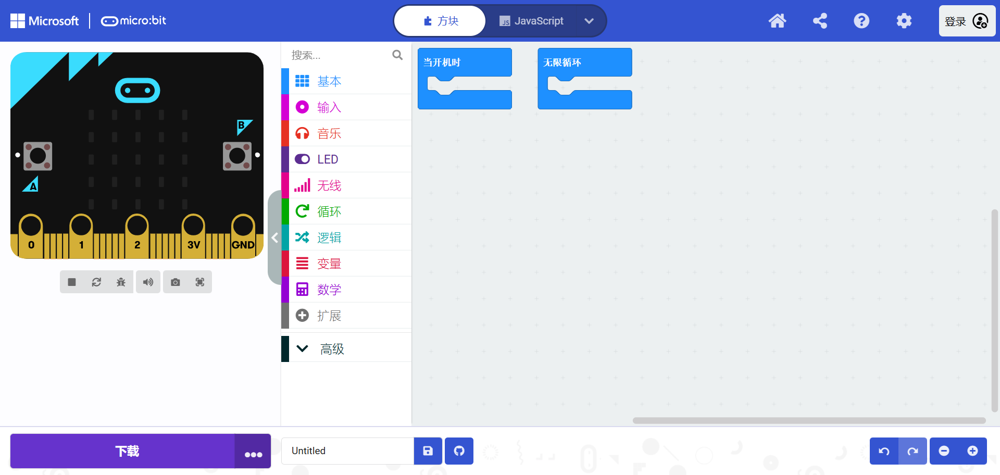

In MicroBit programming, On Start and Forever are key blocks that define how the microcontroller behaves when it starts and during continuous operation.
The On Start block is used to initialize variables, configure settings, or execute tasks that should only run once when the MicroBit is powered on or reset.
The Forever block is a loop that runs continuously after the On Start block has finished, making it ideal for tasks that need to repeat, such as checking sensor inputs or updating a display.
在 MicroBit 编程中，启动时 (On Start) 和 永远 (Forever) 是两个重要的代码块，定义了 MicroBit 在启动时和持续运行期间的行为。
当开机时 (On Start) 块用于初始化变量、配置设置或执行仅在 MicroBit 开机或重置时运行一次的任务。
无限循环 (Forever) 块是一个循环，在启动时代码块完成后会持续运行。它非常适合需要重复执行的任务，例如检查传感器输入或更新显示。
Back to Learning Platform